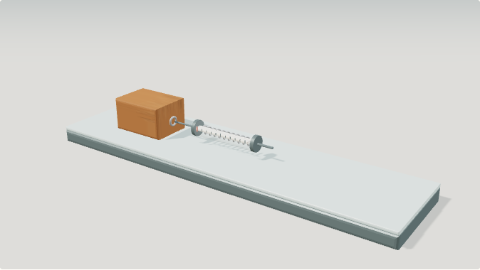

Friction
Record your prediction in your book. Then compare the pull on the same block on two surfaces.

- Wooden block
- Surface
- Spring force meter
Compare the pull
Record your prediction before testing.
This model replays prepared readings. The same block and load travel the same distance at constant speed each time. The pull and sliding friction are the only horizontal forces in this example.